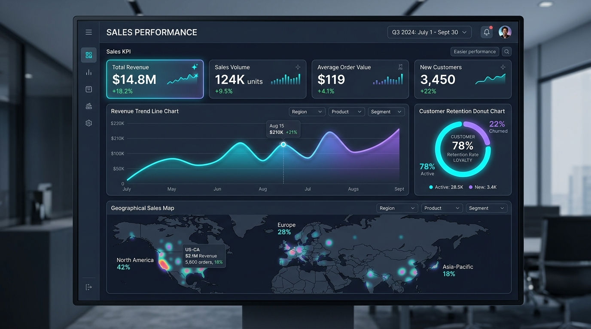
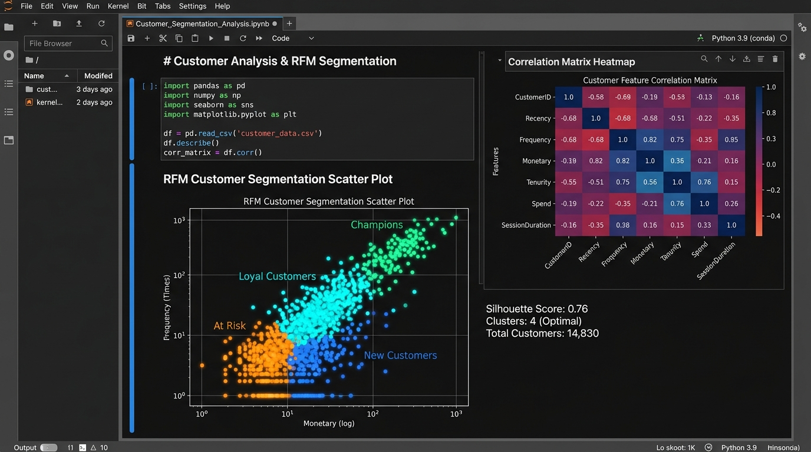
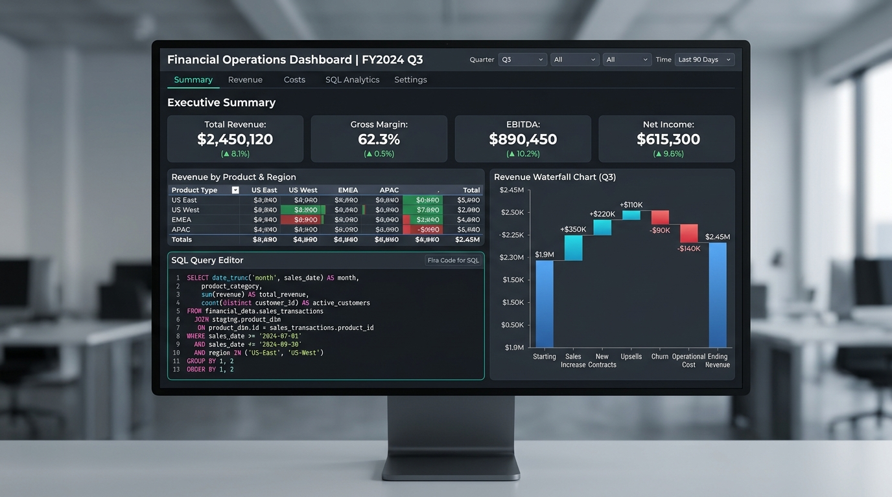

Turning Complex Data Into Strategic Business Value
Hello! I am Rushikesh Patil, an analytical thinker and entry-level Data Analyst with hands-on proficiency in SQL, Python, Power BI, and Advanced Excel. I specialize in EDA, star schema modeling, interactive KPI dashboards, and data-driven storytelling.
Rushikesh Patil
B.Sc / B.Tech graduate in Computer Analytics
Pune / Mumbai, Maharashtra • Open for Remote & Onsite
About Me
Passionate Fresher with a Sharp Eye for Data Insights
I am a motivated entry-level Data Analyst eager to leverage analytical rigor, structured query optimization, and dynamic dashboard creation to solve real-world business challenges.
My Analytical Mindset
I approach data not just as numbers, but as the blueprint of customer behavior, revenue growth, and operational efficiency. I enjoy taking ambiguous, messy data sets and turning them into clean, structured tables with actionable takeaways.
Fresher Strength & Agility
As a fresh graduate with rigorous project practice, I bring zero legacy inertia and 100% adaptability. I am updated with the latest tools—including modern Power BI DAX patterns, Python data wrangling, and PostgreSQL query optimizations.
Data Storytelling
An analysis is only as good as the decisions it inspires. I build visual storyboards and executive dashboards that allow stakeholders to identify sales bottlenecks, customer churn signals, and cost savings in under 5 seconds.
Core Toolkit
Data Analytics & BI Tech Stack
Comprehensive tools, frameworks, and methodologies I use to clean, model, analyze, and present high-impact data intelligence.
SQL & Relational DBs
Data Extraction & QueryingWriting complex queries, joins, subqueries, and database optimizations for large-scale data extracts.
Power BI & DAX
Interactive Dashboards & ModelingDesigning executive dashboards, Star Schema data modeling, Power Query transformations, and complex DAX formulas.
Python Data Stack
EDA, Wrangling & ModelingData cleaning, exploratory analysis, hypothesis validation, statistical testing, and predictive modeling basics.
Advanced Excel
Financial & Pivot ModelingDynamic multi-sheet models, pivot reporting, lookup functions, conditional logic, and macro automations.
Tableau Desktop
Visual Insights & DashboardsDesigning interactive workbooks, LOD calculations (FIXED/INCLUDE), parameter controls, and storyboards.
Statistics & ETL
Hypothesis & Data PipelinesStatistical testing, A/B experiment design, correlation vs causation analysis, and automated data ingestion scripts.
Track Record
Internships & Applied Experience
Hands-on professional experience, virtual analyst simulations, and intensive academic industry capstones.
Data Analyst Intern
InnoTech Analytics Solutions • Remote / Hybrid
Assisted senior business intelligence consultants in analyzing customer churn patterns and sales performance metrics across e-commerce retail accounts.
- Queried 250,000+ transaction rows using PostgreSQL, reducing data extraction time by 35% using indexed subqueries and CTEs.
- Designed and deployed an interactive Power BI Executive Dashboard with 12 DAX measures, tracking MoM revenue growth and regional margin discrepancies.
- Conducted exploratory data analysis (EDA) using Python (Pandas/Seaborn) to isolate churn determinants, presenting findings to team leads.
- Automated weekly KPI reporting workflows using Excel Power Query, saving the operations team 6+ hours of manual compilation every week.
Data Science & Analytics Trainee
TechMentors Academy • Training & Project Cohort
Completed rigorous hands-on technical training covering end-to-end data lifecycle: ingestion, cleaning, exploratory visualization, hypothesis testing, and storytelling.
- Built custom data cleaning scripts resolving missing values, date irregularities, and duplicates across messy raw CSVs.
- Executed A/B hypothesis testing using Scipy and Statsmodels to determine whether website layout changes statistically improved user checkout conversions.
- Created standardized database schema models in MySQL with foreign key constraints and validation rules.
Virtual Job Simulation • Data Visualisation
Tata Group & Forage • Project Simulation
Completed business analytics simulations tailored for C-suite executive briefing at Tata Consultancy Services.
- Interpreted business requirements from CEO and CMO personas to formulate structured visualization roadmaps.
- Delivered 4 critical executive visual presentations answering questions about quarterly revenue trends and customer concentration risk.
Case Studies & Portfolios
Featured Data Analytics Projects
End-to-end analytical solutions built from scratch with clean documentation, live dashboards, SQL scripts, and business impact summaries.

Omnichannel Retail Sales & Churn Analytics Dashboard
Engineered a comprehensive Power BI dashboard modeling customer purchase patterns across 5 regions. Implemented Star Schema with 15+ complex DAX measures (YTD sales, customer retention %, moving averages).

E-Commerce RFM Customer Segmentation & Churn Risk Analysis
Performed deep exploratory analysis on customer lifetime transaction logs. Clustered users into 4 distinct persona groups (Champions, Loyalists, At Risk, Lost) using Recency-Frequency-Monetary (RFM) modeling.

Corporate Financial Operations & Waterfall Variance Tracker
Automated financial consolidation model connecting PostgreSQL revenue databases to an Excel Power Pivot executive summary with waterfall variance and dynamic scenario toggles.
Live Business Intelligence KPI Simulator
Click on different business metric toggles below to experience how I model and visualize dynamic KPI performance in real time.
Monthly Recurring Revenue (MRR)
Credentials
Education & Verified Certifications
Rigorous foundation in computer analytics, mathematical logic, and globally recognized data credentials.
Academic Background
Bachelor of Science in Computer Science / BCA
Savitribai Phule Pune University (SPPU)
Core coursework: Database Management Systems (DBMS), Data Structures & Algorithms, Applied Probability & Statistics, Object-Oriented Programming (Python), and Business Intelligence Foundations.
Higher Secondary Certificate (HSC) • Science
Maharashtra State Board • Distinction
Focus on Mathematics, Physics, and Computer Science
Professional Certifications
Google Data Analytics Professional Certificate
Coursera • Google
SQL, R, Spreadsheets, Tableau, Data Ethics & Storytelling
Microsoft Certified: Power BI Data Analyst (PL-300)
Microsoft • In-depth Track
Data Modeling, DAX Calculations, Power Query ETL, Dashboards
SQL (Advanced) Skill Certificate
HackerRank
Recursive CTEs, Window Aggregations, Pivot Queries, Performance
Applied Data Science with Python
IBM / Cognitive Class
Pandas, NumPy, Data Cleaning, Statistical Visualizations
Get In Touch
Let's Discuss How I Can Add Value to Your Data Team
I am actively seeking full-time, contract, or internship opportunities as a Junior Data Analyst, BI Developer, or Data Specialist. Immediate joiner with all credentials verified.
Send a Message
Fill out the details below and I'll get back to you within 24 hours.